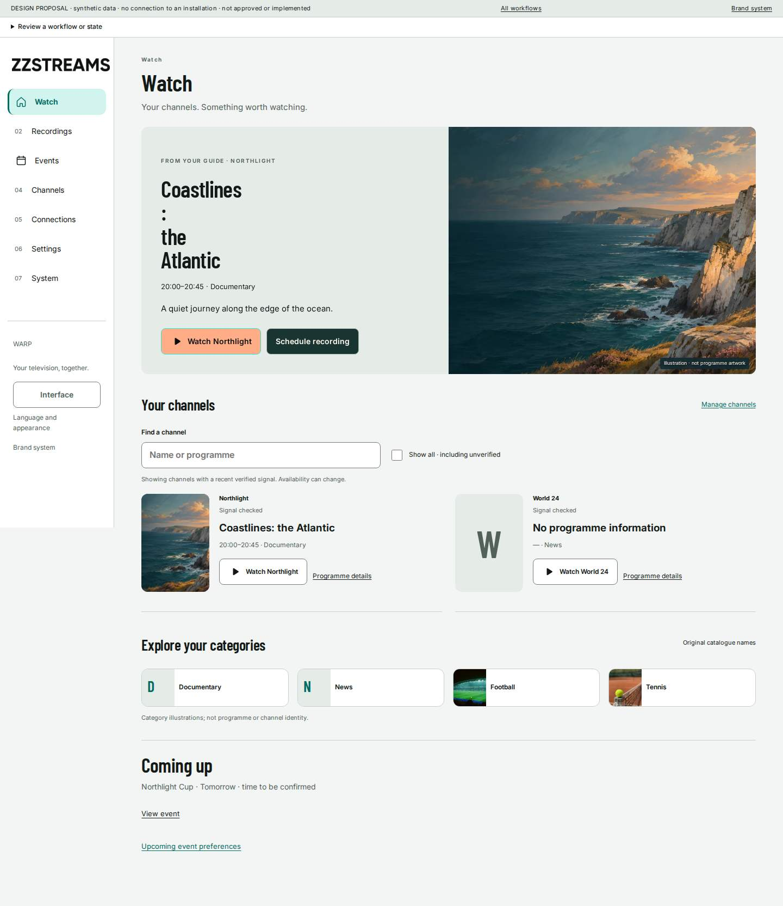

01 · Lime
Compact broadcast rhythm, condensed headings and channel rows.

ZZSTREAMS · DESIGN STUDY
Find a channel, record a programme and connect your devices through one shared structure. Choose a presentation that feels right.
Design-only review · synthetic examples · no installation connection. Interactive actions simulate outcomes. No application code or runtime has been redesigned.
Explore the interactive designCompact broadcast rhythm, condensed headings and channel rows.

Warm editorial composition, balanced images and generous reading space.

A featured viewing area, visual categories and deliberate phone layouts. Proposed first-visit default.